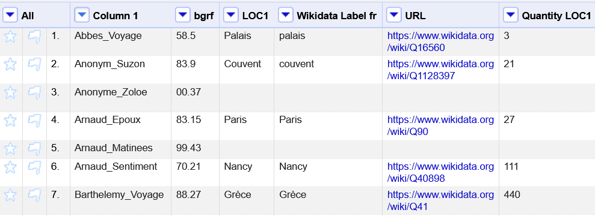
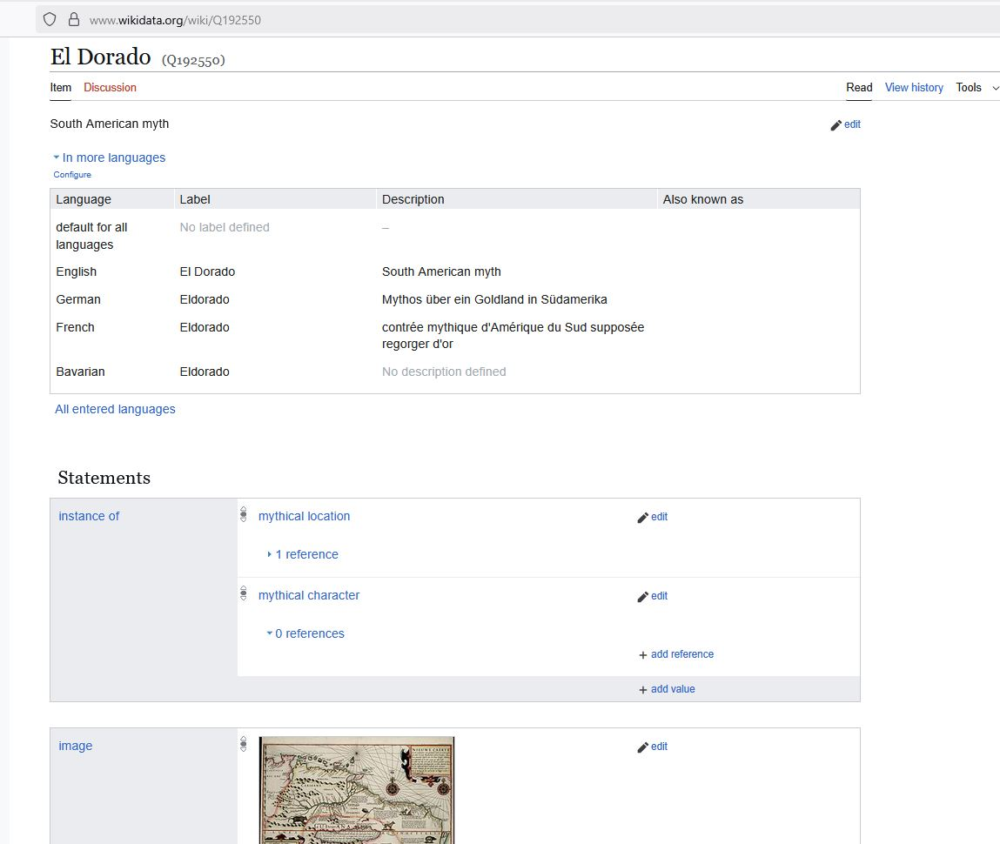
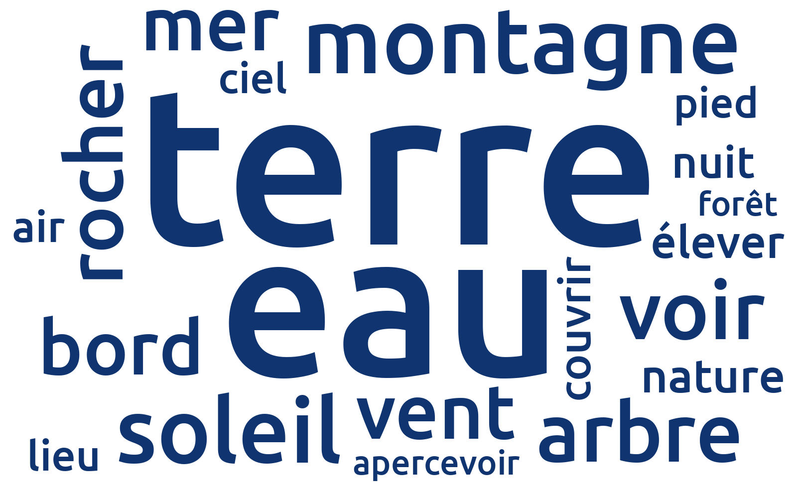
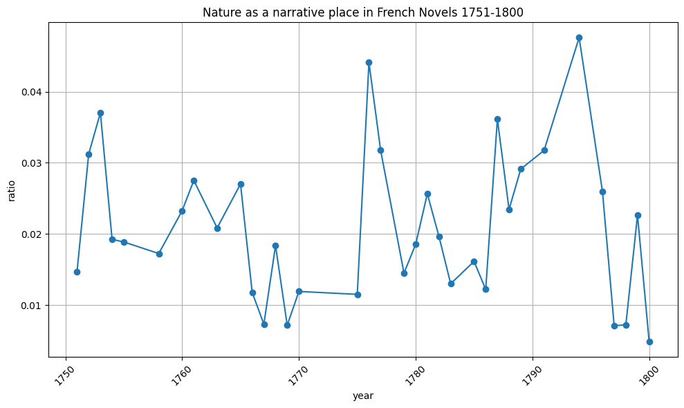
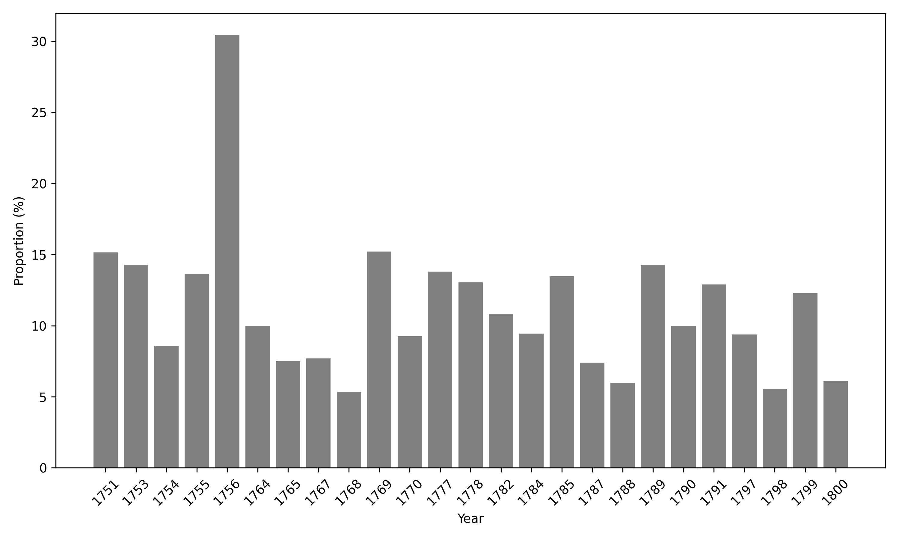
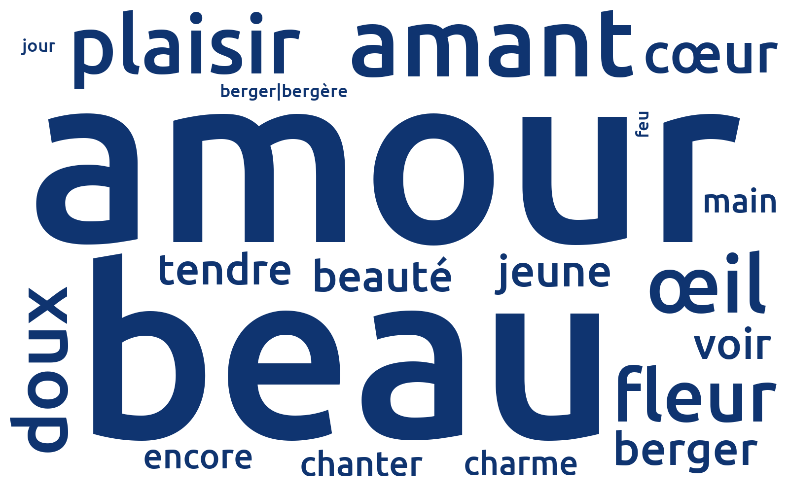
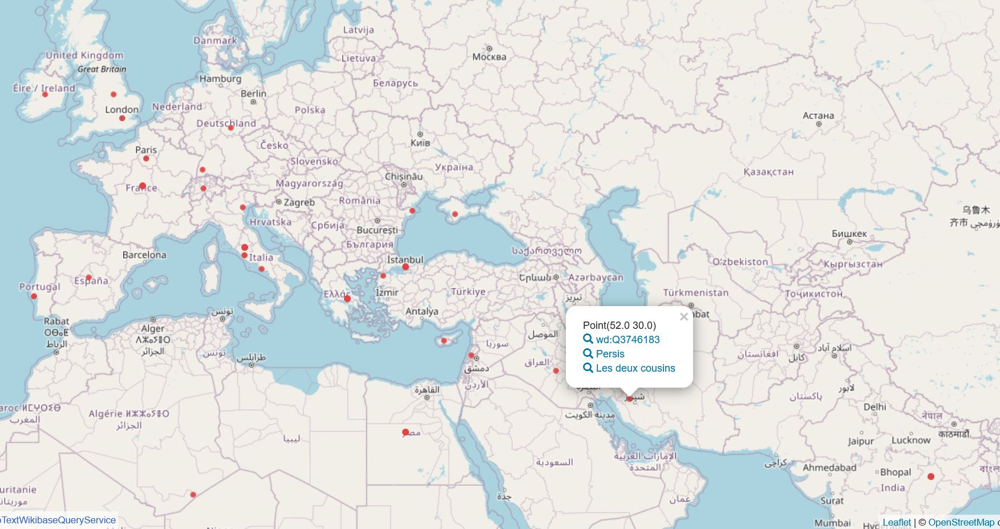
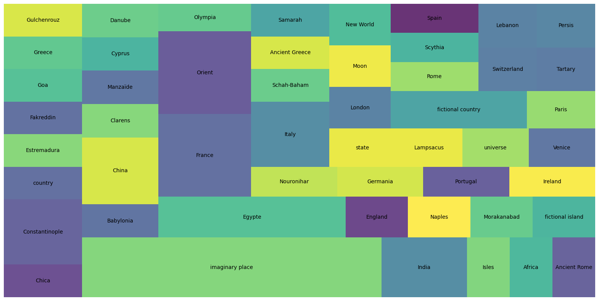

3 Literarische Entitäten: Orte
The computer knows nothing about literary history: it models only the evidence we give it.
(Underwood (2019), 36)
Als der russische Literat Nikolaï Karamzine im August 1789 um 5 Uhr morgens in Lausanne aufbricht, hat er “la gaieté dans la coeur, l’Héloïse de Rousseau à la main”[^1]. In seinem Reisebericht schreibt er: “Vous devinez sans doute le but de ma promenade. Oui, mes amis, je voulais voir de mes propres yeux les lieux charmants où l’immortel Rousseau a mis en scène ses héros.” (Karamzine (2002), 880). Gegen 9 Uhr erreicht er Vevey, das Ziel seiner Reise (Figure 3.1). Ergriffen fühlt er sich den Protagonisten des Romans Julie ou la Nouvelle Héloïse (1761) nahe, denn er hat sich an den physischen, geographischen Ort der Handlung des Romans von Jean-Jacques Rousseau begeben: “Il faut que la beauté de ces lieux ait fait une profonde impression sur l’âme de Rousseau pour que ses tableaux fussent si exacts et en même temps si animés. En regardant bien, il me semblait reconnaître de loin l’esplanade qui avait eu tant d’attrait pour Saint-Preux. Ah! mes amis, pourquoi faut-il que Julie n’ait jamais existé!” (Karamzine (2002), 881).
Auf seiner literarischen Pilgerreise begegnet er auch einem Bauern, der bereits das Phänomen zu kennen scheint, dass sich Lesende auf den geographischen Spuren der Orte des sentimentalen Romans begeben: ”Le cultivateur, en y voyant venir quelque nouveau curieux, lui dit avec un sourire narquois: « Monsieur a sans doute lu la Nouvelle Héloïse. » (Karamzine (2002), 881).[^2]

Diese Begebenheit aus dem 18. Jahrhundert ähnelt jener Sehnsucht, die sich auch heute noch findet, wenn sich Serienfans in die Gegend in New Jersey begeben, in der die Serie The Sopranos spielt oder sich Bewunderer der Kunst von Van Gogh nach Saint-Rémy-de-Provence begeben: an einem realen geographischen Ort möglichst eins mit einem Kunstwerk oder literarischen Werk zu sein, es an einem realen geographischen Ort quasi zu “erfühlen”. Ähnlich können wir dies im 18. Jahrhundert für Bewunderer der Nouvelle Héloïse beobachten, die sich in Scharen nach Vevey begeben.[^3]
Wie Barbara Piatti bemerkt, müsste sich “die dichterische Phantasie an keinerlei physischen Raum halten und auch nicht an dessen geographische und topographische Gesetzmässigkeiten – und doch tut sie genau das sehr oft” (Piatti (2010), 7). Piatti beobachtet auch, dass es auf der Weltkarte der Literatur bestimmte Verdichtungspunkte sowie unberührte Flecken gibt. Die Beziehungen zwischen Raum im literarischen Werk und Raum im realweltlichen physischen Sinne passioniert nicht nur die zeitgenössischen Lesenden des 18. Jahrhunderts wie Karamzin, sondern ist auch im Kontext der digitalen Geisteswissenschaften und Möglichkeiten der digitalen Erfassung und Kartierung Gegenstand aktueller Forschung (Piatti (2017), Heuser / Algee-Hewitt / Lockhart (2016), Herrmann / Grisot (2022), Wilkens et al. (2024)).
Raum und Zeit sind grundlegende Kategorien der Literatur und der literaturwissenschaftlichen Forschung. Die Transgression von symbolischen Ortsgrenzen kann – wie im russischen Strukturalismus formuliert – Auslöser einer Handlungsabfolge sein, Orte können wie Kant es in Anbetracht von übermächtigen Naturphänomenen wie einem Gebirge oder Meer beschreibt mit dem Gefühl des Erhabenen verbunden sein.[^4]
In der Literaturgeschichte und Geschichtsschreibung spielen Orte und Räume eine wichtige Rolle – nicht zuletzt im Kontext des „spatial turn“ (Lafon 1997; Weber 2014; Frank 2009). In literarischen Werken sind insbesondere Handlungsorte relevant (Dennerlein 2009), es können aber auch Publikationsorte sowie weitere räumliche Dimensionen berücksichtigt werden [(Curran 2018; Burrows u. a. 2016)]. Daher können entsprechende Informationen wohl als “literaturhistorisch relevant” gelten.
In der hier vorgeschlagenen Analyse wird ein Begriff von Entitäten des Ortes verwendet, der sowohl geographisch realweltlich vorhandene politische oder geographische Einheiten wie Paris als Publikationsort umfasst, als auch imaginäre Orte wie El Dorado als Handlungsort. Nicht behandelt wird ein umfassender Begriff des literarischen Raumes, der auch Entitäten wie eine Türschwelle, ein Boudoir etc. umfassen würde. Es gibt zwar Versuche diese maschinell zu erfassen [(Schumacher 2023)], jedoch sind die Erkennungsraten der maschinellen Extraktion hier noch nicht vergleichbar mit Ergebnisraten einer maschinellen Named Entity Recognition von Ortsnamen. Zudem ist der literarische Raum in einer sehr breiten, umfassenden Definition weniger anschlussfähig an das Paradigma von Linked Open Data.
3.1 Spatial Humanities
Die Möglichkeit, mit digitalen Methoden in größeren Textsammlungen Ortsnamen zu identifizieren und quantitativ auszuwerten, eröffnete im Bereich der Digital Humanities ein weites Feld der Analysen von Beziehungen zwischen Geographie und Literatur (Bodenhamer 2015). Die Studien von Franco Moretti zu einem Atlas of the European Novel oder Barbara Piattis Projekt A Literary Atlas of Europe können dabei als wegweisend betrachtet werden ([Moretti 1999]; Piatti u. a. 2009).[^5]
Morettis Studie Atlas of the European Novel, erschienen als gedrucktes Buch, sieht Karten nicht als Metaphern, sondern als analytisches Tool: “geography is not an inert container, is not a box where cultural history ‘happens’, but an active force, that pervades the literary field and shapes it in depth.” (Moretti 1999b: 3). Laut Moretti gibt es dabei zwei Möglichkeiten: die Untersuchung von “space in literature” oder von “literature in space”, wobei beides auch gelegentlich überlappen kann (Moretti 1999b: 3).[^6] Bei seinen Untersuchungen zu Romanen 1800-1900 verortet er beispielsweise die Herkunft der Bösewichte auf einer Landkarte; Frankreich zeigt sich hier als “epicentre of the world’s evils” im Roman des 19. Jahrhunderts (Moretti 1999b: 30).
Inspiriert von Moretti arbeitet das interdisziplinäre Verbundprojekt von Partnern aus Schweiz, Deutschland und Tschechien A Literary Atlas of Europe, welches eine elektronische Datenbank aufbaute, die das literarisch-geographische System Europas dokumentiert: “What comes in sight is Europe’s (imaginary) space of literature, which has its own dimensions, which functions according to its own rules, but which is nevertheless anchored in the ‘reality’ of existing places and spaces.” (Piatti et al. 2009: 191). Es werden Regionen Europas sichtbar, die von einem dichten fiktionalen Layer besiedelt sind, aber auch spärlich vertretene Regionen im literarisch-geographischen Raum Europas. Die Erfassung der Orte und Räume erfolgte in einer relationalen Datenbank.
Einen Schritt weiter als Piattis Projekt gehen Ryan Heuser, Mark Algee-Hewitt et al., wenn sie nicht nur die Handlungsorte erfassen und kartieren, sondern sie mit einer weiteren Variablen in Verbindung setzen: Emotionen. In ihrer Studie Mapping the Emotions of London in Fiction, 1700–1900 extrahieren sie Ortsnamen und Emotionen aus literarischen Werken und analysieren so aufkommende Muster. So werden Orte, die mit Angst (Gefängnis, Berg) oder Glück (Kirche, Theater) korrelieren, sichtbar.
Inwiefern sind diese Kartographierungen von Handlungsorten als analytisches Instrument geeignet, neue Erkenntnisse zu Tage zu fördern? In Mapping the Emotions of London lässt sich über die Visualisierung der Handlungsräume über die Zeit 1700 bis 1900 folgendes erkennen: Es zeigt sich ein Anwachsen der physischen Ausdehnung Londons in realtweltlicher, historischer Perspektive bei einer gleichbleibenden Stabilität des fiktionalen Raums London im Zeitverlauf 1700 bis 1900 (Heuser / Algee-Hewitt / Lockhart 2016).
Ebenfalls zu Orten und Affekten arbeiten Berenike Herrmann und Team im Projekt High Mountains Low Arousal? Distant Reading Topographies of Sentiment in German Swiss Novels in the early 20th Century anhand eines Korpus deutschschweizer Literatur. In einem kultursemiotischen Ansatz wird eine Einteilung von räumlichen Entitäten in die Kategorien URBAN und RURAL vorgenommen und diese im Hinblick auf ihre Korrelation mit Affekten ausgewertet.
Wenn geisteswissenschaftliche Kategorien auf informationstechnische Konzepte wie Geoinformationssysteme treffen, ergeben sich eine Vielzahl epistemischer und ontologischer Fragen (Bodenhamer 2015: 10). Dazu gehören beispielsweise sowohl die Historizität oder Unsicherheit geisteswissenschaftlicher Daten, als auch imaginierte Publikations- oder Handlungsorte, die auch im Folgenden (Abschnitt 4.2) noch diskutiert werden.
In der vorliegenden Studie werden hinsichtlich Kategorien des Ortes zwischen Publikations- und Handlungsorten unterschieden und diese aus den bibliographischen Nachweissystemen und Primärtexten (französische Romane 1751-1800) extrahiert. Unter Publikationsorten wird der Ortsname verstanden, an dem der jeweilige Roman laut bibliographischen Metadaten publiziert wurde. Unter Handlungsort wird der Ortsname verstanden, der als vorrangiger Ortsname der Handlung in den bibliographischen Metadaten verzeichnet ist, ergänzt um die häufigsten Ortsnamen hervorgegangen aus maschineller NER (Named Entity Recognition).
Innerhalb des Knowledge Graphen lassen sich diese Informationen mit vielen weiteren Parametern in Beziehung setzen, beispielsweise mit dem Erstpublikationsdatum der Romane oder mit vorherrschenden Themen.
Leitende Forschungsfragen sind dabei: Welche Handlungsorte treten im französischen Roman des 18. Jahrhundert auf? Sind im zeitlichen Verlauf Trends und Muster erkennbar? Welche räumlichen Konzepte hat das Topic Modeling zutage befördert?
Des Weiteren: Welche Publikationsorte treten dominant im 18. Jahrhundert hervor? Gibt es auch hier zu beobachtende Besonderheiten in der diachronen Entwicklung, insbesondere im Hinblick auf die Französische Revolution als Zäsur?
Und abschließend: Welche Espace autres können wir im Graphen finden? Mit welchen Themenkonzepten ist der Handlungsort ‘Afrika’ quantitativ betrachtet verknüpft? An welchen Handlungsorten spielen Romane mit dem Thema ‘Wunder’ im Roman des 18. Jahrhunderts?
Im folgenden Unterkapitel soll dargestellt werden, wie Informationen zu räumlichen Entitäten aus diesen beiden Informationsquellen gewonnen und in einem Wissensnetzwerk basierend auf dem Linked Open Data (LOD)-Paradigma (Berners-Lee et al. 2006; Chiarcos / Pareja-Lora 2020) kombiniert werden. Beispielhafte Anwendungsszenarien zeigen, auf welche Weise sich in dieser datenbasierten Herangehensweise Erkenntnisse über Handlungs- und Publikationsorte im französischen Roman 1751-1800 gewinnen lassen.
3.2 Methode: Extraktion von Ortsnamen aus der Primärliteratur durch Named Entity Recognition mit SpaCy
Named entity recognition (NER) ist eine weit verbreitete algorithmische Methode der Informationsextraktion aus Texten, “to identify and segment named entities and classify or categorize them under various predefined classes” (Sarkar 2019: 536). Ziel der named entity recognition ist es, Entitäten, die Orte, Personen, Werke oder Organisationen bezeichnen, zu extrahieren. Der im Folgenden verwendete Algorithmus von SpaCy (Honnibal / Montani 2017) enthält im französischen Sprachpaket folgende Entitäten, von denen die LOC (location) Entitäten als Kategorie ausgewählt wurden.
- PER: Person
- LOC: Location
- ORG: Organisation
- MISC: Miscellaneous

Als Input der Pipeline zur Ortsnamenerkennung dient die bereits in Kapitel II beschriebene Romansammlung “Collection de romans français du dix-huitième siècle” (Röttgermann (2021)), welches im Plaintextformat eingespeist wurde. Mithilfe der Named Entity Recognition (NER) Pipeline von SpaCy mit dem größten verfügbaren französischen Sprachpaket fr core news lg[^7], wurden alle Entitäten, die als Orte identifiziert wurden (mit dem Label “LOC” gekennzeichnet), sowie die Anzahl an Erwähnungen der Ortsnamen im Text extrahiert.[^8] Als Grundlage für Statements zu den häufigsten in den Primärtexten enthaltenen Orten wurde als Schwelle fünf festgelegt, mit dem Ziel, eine zur Quelle der bibliographischen Metadaten vergleichbare Anzahl an Orten pro Roman zu erhalten.
In einem nachgelagerten Schritt wurden die Ergebnisse der automatischen Extraktion manuell überprüft und gegebenenfalls “false positives” entfernt. “False negatives” wurden nicht ergänzt. Häufige Verwechslungen zeigten sich bei Figuren- und Ortsnamen. Der String ‘Vénus’ kommt beispielsweise als Handlungsort, aber auch als Figur vor.[^9] Da die in den bibliographischen Daten (Martin / Mylne / Frautschi 1977) vorliegenden bibliographischen Metadaten nicht nur Handlungsorte, sondern auch die Figurennamen der Hauptprotagonisten pro literarischen Text enthalten, diente diese Information als zusätzliche Abgleichmöglichkeit zur Erkennung von ‘false positives’.
In einem dritten Schritt wurden die extrahierten Ortsnamen mithilfe des Tools OpenRefine (Huynh (2010)) mit Entitäten auf Wikidata in einem teil-automatisierten Prozess gematched (Figure 3.3). Dazu wurde zunächst ein Matching gegen die Wikidata-Kategorien: political entity (Q16562419) und human settlement(Q486972)getestet, ein Reconciliation-Prozess ohne gefilterte Kategorien zeigte jedoch die beste Trefferquote und wurde im Weiteren angewandt.

Die Extraktion der Ortsnamen und der Prozess der Reconciliation mit dem Wikidata Knowledge Graphen zeigte einige Herausforderungen, die sich unter den folgenden Kategorien subsumieren lassen: Ambiguität der Strings, Fiktionalität und Textebenen, Historizität der Ortsnamen.
- Ambiguität
Einige extrahierte LOC entities können zwar Orte bezeichnen, sind jedoch Homonyme von Figuren (Beispiele wären “Virginie” als Handlungsort oder Figur) oder aber bezeichnen Ortsnamen, die es gleichnamig mehrmals auf der Erde gibt und für die daher eine Auswahl getroffen werden muss, um welchen Ort es sich im Kontext des literarischen Werkes handelt. Ein Beispiel dafür ist der String “Ile de France”, der im Zeitalter des Kolonialismus der Name für die heutige Insel Mauritius war, und “Ile-de-France” als Ballungsraum Paris.[^10]
- Fiktionalität
Ryan Heuser und Mark Algee-Hewitt stellten in ihrer Studie zu Ortsnamen in London fest: Nicht alle Ortsnamen, die in literarischen Texten durch Namenserkennung identifiziert werden, beschreiben den Ort der Erzählung als „Schauplatz der laufenden Handlung“, sondern sie können auch im Rahmen von Analepsen und Prolepsen und als dritte Kategorie auch als Gegenstand eines Diskurses auftreten (Heuser / Algee-Hewitt / Lockhart 2016). Im hier untersuchten Korpus französischer Romane der Aufklärung ließ sich Ähnliches feststellen: vom Algorithmus identifizierte Ortsnamen können die narrativen Orte bezeichnen, aber auch ein diskursives Element sein oder eine Handlung bezeichnen, die in der Zukunft oder in der Vergangenheit stattfindet. Innerhalb der im Graphen verwendeten Property narrative location wird keine Differenzierung zwischen Handlungsorten, die innerhalb der Diegese zeitlich zurück- oder vorgreifen, vorgenommen. Ortsnamen werden gleichwertig als narrative location eingespeist.
Ähnliches gilt für die Erwähnung von Orten in Träumen, Erinnerungen oder Sehnsüchten der Figuren – Barbara Piatti spricht hier von “projizierten Orten” (Piatti / Reuschel / Hurni 2013), die ebenfalls in der named entitity recognition erfasst und mit der inklusiv und breit definierten Property narrative location erfasst werden.
- Historizität
Städte, Länder, Ortsnamen und Grenzen haben die Eigenschaft, historischem Wandel zu unterliegen. Die aus dem 18. Jahrhundert stammenden Texte enthalten Ortsnamen, die auf Entitäten verweisen, die in ihrer heutigen geographischen Benennung abweichen. Ein Beispiel dafür ist der Handlungsort “Constantinople” aus Voltaires Werk Candide (1759), der dem heutigen Istanbul entspricht.
Im Wikidata-Knowledge Graphen ist die Historizität der Orte nicht systematisch modelliert, jedoch konnten für die extrahierten Ortsnamen adäquate Matches zugeordnet werden, die der Historizität der Orte gerecht werden. Als Beispiele seien hier das Wikidata-Item Q12060804 (Label: Isle de France), das von 1715 bis 1810 den Namen der Insel Mauritius bezeichnet oder Q16869 (Label: Constantinople, “appellation ancienne et historique de l’actuelle ville d’Istanbul en Turquie”) genannt. Es ist auf Wikidata zu beobachten, dass es auch bei einigen Datenobjekten der Orte eine Unterscheidung zwischen dem realweltlichen Ort (beispielweise “El dorado”[^11]) und dem Ort in Literatur und Kunst (mythischer Ort El dorado, Figure 3.4 [^12]) zu finden ist. Grundsätzlich wurde jedoch beim Prozess des Matchings per OpenRefine auf die Unterscheidung zwischen dem fiktionalen Ort (z.B. fiktionales Paris in einem definierten Roman) und dem realweltlichen Ort (Wikidata-Datenobjekt Paris) verzichtet, da die Datenabdeckung auf Wikidata hierzu nicht ausgelegt ist

Beim Prozess der Disambiguierung von Entity-Matches war eine manuelle Überarbeitung erforderlich, mit besonderem Augenmerk auf die Historizität und Fiktionalität der Texte. Das Ergebnis des Prozesses liegt als Liste im GitHub Repository Wikibase-Bot vor.[^13]
Die vereinheitlichte Verwendung des Ortsvokabulars und das Mapping auf Wikidata Entitäten ermöglichen es, heterogene Daten über Informationsquellen hinweg vergleichbar zu machen und hinsichtlich der Orte auf Properties des Wikidata Knowledge Graphen zurückzugreifen.
Überblick über die 20 häufigsten Handlungsorte von etwa 1700 französischen Aufklärungsromanen
Überblick über die 20 häufigsten Handlungsorte laut Named Entity Recognition
Als Ergebnis der Extraktion der Handlungsorte ist festzuhalten, dass die häufigsten Handlungsorte im französischen Roman der zweiten Hälfte des 18. Jahrhunderts Paris (365), Frankreich (225), ländlicher Raum (151) und England (124) sind.[^14]
Ein Vergleich der Abfrage verengt auf alle Statements, die durch Named Entity Recognition hervorgegangen sind, zeigt, dass hier als häufigste Ortsnamen ebenfalls Frankreich (‘France’, ‘Paris’) und England (‘Londres’, ‘Angleterre’) auftauchen, gefolgt von Italien, hier jedoch repräsentiert durch die Städtenamen Rom oder Venedig.
Der gewählte Ansatz einer Extraktion von Ortsnamen mithilfe einer Named Entity Recognition mit SpaCy grenzt sich von Ansätzen ab, die sich nicht nur auf die Erkennung von Ortsnamen fokussieren, sondern feingranularer das Phänomen des literarischen Raumes umfassender in den Fokus nehmen und beispielsweise Innenräume, Bewegungen im Raum (Barth 2022) oder auch implizite Räume (Schumacher 2023: 119–123) mit in die Analyse einbeziehen und auch versuchen diese im Kontext der Computational Literary Studies zu operationalisieren.
Die ‘Named Entity Recognition’ ist jedoch nicht die alleinige Quelle der Statements zu Handlungsorten, wie im folgenden Abschnitt beschrieben wird.
3.3 Informationen zu Handlungs- und Publikations- orten aus der Bibliographie du genre romanesque français 1751-1800
Eine wichtige Quelle an Metadaten stellt die in den 1970er Jahren erstellte Bibliographie du genre romanesque français 1751-1800 dar, die 2020 von Andreas Lüschow umfassend analysiert und nach aktuellen bibliographischen Standards modelliert wurde (Lüschow, 2020). Eine Volltextdigitalisierung und halbautomatische Kodierung mit einem Klassifikator für maschinelles Lernen – Conditional Random Fields – wurden dabei bereits vorgenommen. Daran anschließend wurde eine semantische Modellierung der in den einzelnen Bibliographie-Einträgen enthaltenen Keywords vorgenommen. Wie im Fall der Ergebnisse der Named Entity Recognition (NER) konnten in einem teil-automatisierten Prozess die Strings mithilfe des Tools OpenRefine Wikidata-Entitäten zugeordnet werden. Dieser Prozess wird innerhalb von OpenRefine (Huynh 2010) als reconciliation bezeichnet. In beiden Pipelines der Informationsextraktion der Orte wurde ein gemeinsames kontrolliertes Vokabular verwendet.[^15]

Die in den bibliographischen Metadaten enthaltenen Informationen zu Handlungsorten im französischen Roman 1751-1800 zeigen in dieser statistischen Übersicht (Figure 3.5) einige interessante Muster: der Anteil des Handlungsortes “Angleterre” (England) nimmt im Zeitverlauf zu. Dies, so könnte man argumentieren, ist keine sehr überraschende Erkenntnis, ist doch der Einfluss des englischen Romans – wie zum Beispiel Samuel Richardsons Clarissa (1748) – auf den französischen Roman ein in der literaturwissenschaftlichen Forschung bekanntes Phänomen im 18. Jahrhundert (Engler 1982; Lehmann 2016). Man denke an die Éloge de Richardson (1762) von Denis Diderot und an eine ganze Welle von sentimentalen Romanen, die Bezug auf den englischen Roman nehmen. Auch die englische “gothic novel” fand in Frankreich zahlreiche Übersetzungen und Nachahmungen, wie es Bellin de La Liborlières in La Nuit anglaise (1799) parodiert (Prungnaud 1994; Schöch 2009). Eine Zunahme an englischen Settings der Handlungsorte als Phänomen erscheint im Kontext des Einflusses des englischen Romans als Modell für die französischen Romanciers plausibel.
Als weiteres Muster in den Daten der Handlungsorte lässt sich beobachten, dass der Anteil der imaginären Orte (“pays imaginaires”) im Zeitverlauf deutlich abnimmt. Eine Erklärung für dieses Muster in den Daten ist, dass der utopische Roman des 18. Jahrhunderts die Narration in imaginäre Königreiche (Le Roi Guiot), auf Planeten (Micromégas), in weit entfernte Universen verlegt. Diese Tendenz ist jedoch rückläufig, wie die aggregierten Daten zu narrativen Orten zeigen:

Ein früher Science-Fiction-Roman wie Tiphaigne de La Roches Roman Amilec ou la graine d’homme (1753), der auch Fragen der frühen Genetik und Eugenik verhandelt, wirft ein Licht darauf, warum es notwendig sein könnte, die Erzählung nicht im geographischen und politischen Jetzt sondern - wie in diesem Anschauungsbeispiel - auf dem Planeten Mars und auf dem Mond zu verorten: Diese gängige Praxis der “Verlegung” der Handlung an einen anderen Ort ermöglicht es dem Erzähler oder der Erzählerin, die politische Realität auf indirekte Weise zu kritisieren, indem die politischen Machthaber in Frankreich nicht erwähnt werden, sondern - wie hier auf satirische Weise - die Machthaber in weit entfernten imaginierten Gesellschaften beschrieben werden. Die Gesellschaft auf dem Mond, wie in Amilec beschrieben, weist daher bemerkenswerte Phänomene wie Schriftsteller:innen, einen Index und eine Zensur von Büchern mit klaren Bezügen zur politischen Situation in Frankreich auf. Eines der Bücher auf dem Index in der Mondgesellschaft nennt sich „Dictionnaire Univerſel“ und verweist damit vermutlich auf das Dictionnaire universel (1690) von Furetière:
„Le ſecond des Ouvrages Lunaires qui actuellement font le plus de bruit, eſt le grand Dictionnaire Univserſel, oû l’on apprend à parler de tout & à ne raiſonner ſur rien;
Ouvrage très-utile aux fainéans, & dont aucun demi-ſçavant ne ſe peut paſſer.[^18]“
— Tiphaigne de la Roche (1754), 54
Auch in einem satirischen Werk wie Jean Vesque de Puttelanges Roi Guiot (1791), dessen Handlungsort in den Metadaten (Martin / Mylne / Frautschi 1977) mit “royaume des pacanLe ſecond des Ouvragess” beschrieben ist, finden wir eine ähnliche Praxis der sehr direkten Kritik von Monarchie und Absolutismus, die jedoch in einem imaginären Königreich spielt.
Insgesamt können wir in den aggregierten Daten nach der Französischen Revolution beobachten, dass Frankreich und insbesondere Paris als Handlungsorte zunehmen und dass der Anteil der „imaginären Orte“ abnimmt. Welche Erklärungsansätze gibt es für dieses zu beobachtende Muster in den Daten?
In Miriam Eliav-Feldons Worten ist Utopie “a presentation of a positive and possible alternative to the social reality, intended as a model to be emulated or aspired to” (Eliav-Feldon 1982). In diesem Sinne ließe sich argumentieren, dass die politische Realität in Frankreich, als der utopische Gedanke von „Liberté, Égalité, Fraternité“ in der Französischen Revolution seinen Höhepunkt und seine Verwirklichung findet, möglicherweise einen Einfluss auf den Rückgang der imaginären Orte im französischen Aufklärungsroman hat.
Imaginäre Handlungsorte wie erfundene Staaten können als Vehikel für versteckte Kritik an der Monarchie oder der Kirche genutzt werden. Dieses “Verstecken” der Kritik scheint mit dem Voranschreiten der Dekaden in der zweiten Hälfte des Jahrhunderts abzunehmen.
Als weiterer Grund für den Rückgang des Handlungsortes der imaginären Orte kommt hinzu, dass Romane im 18. Jahrhundert nicht nur an imaginären Orten spielen, sondern zunehmend als neue Spielart eine Versetzung der Handlung in zeitlicher Entfernung (in der Zukunft) zum Tragen kommt. L’An deux mille quatre cent quarante, rêve s’il en fut jamais (1771) von Louis-Sébastien Mercier gilt als erster utopischer französischer Roman, dessen Handlung in der Zeit und nicht im Ort versetzt ist (Trousson 2006: 89; Heyer 2006: 203). Diese Verschiebung von der Utopie im Raum hin zur Utopie in der Zeit könnte als weiterer Erklärungsansatz für das Abnehmen des Handlungsortes “pays imaginaire” herangezogen werden.
3.4 Räumliche Konzepte in den Ergebnissen des Topic Modelings: Natur und locus amoenus
Im vorangegangenen Kapitel 3 wurde eine Information Extraction Pipeline vorgestellt, mit deren Hilfe sich aus den Primärtexten (Romanen) Topics extrahieren ließen.[^19] Dabei wurden als häufig vorkommenden Topics im französischen Roman der zweiten Hälfte des 18. Jahrhunderts ‘amour’, ‘sentiment’, ‘deuil’, ‘nuit’, ‘famille’, ‘destin’, ‘vertu’, ‘voyage’ oder ‘philosophie’ für das Volltextkorpus (Röttgermann, 2023) extrahiert. Aus der Topic Modeling Pipeline sind als semantische Cluster im Hinblick auf räumliche Konzepte auch zwei Topics von Interesse: das Topic ‘nature’ und das Topic ‘locus amoenus’, die im Folgenden näher betrachtet werden.
3.4.1 Natur
Das mit dem Begriff ‘nature’ gelabelte Topic enthält Top Topicwörtern wie Wasser (“eau”), Erde (“terre”), Baum (“arbre”), Gebirge (“montagne”), Wald (“forêt”) und findet auch in den bibliographischen Metadaten eine Entsprechung im Themenkonzept ‘nature’.

Wie hat sich das Thema “Natur | nature | nature” in diachroner Betrachtung verändert? Eine SPAQRL-Query, die nach dem Erstpublikationsdatum und dem entsprechenden Themenkonzept “Natur | nature | nature” fragt, gibt hier Aufschluss: Als Ergebnis lässt sich erkennen, dass es - relativ betrachtet- einen Höhepunkt der Natur-Thematik im Jahr 1794 gibt (Figure 3.8).[^20]
Das Themenkonzept “Natur” tritt beispielsweise mit Handlungsorten wie “Samarah” (Vathek, 1787), “Ile-de France”[^21] (Paul et Virginie, 1788), “Babylone” (La princesse de Babylone, 1768) oder “cadre pastoral (Cévennes)” (Claris de Estelle, 1788) gemeinsam auf.
Wie ist das thematische Konzept “Natur” im französischen Roman und in der französischen Gesellschaft des 18. Jahrhundert einzuordnen? Neben Erde (‘terre’) fallen im extrahierten Topic die Dominanz von Bergen (‘montagne’, ‘rocher’) und Meer (‘eau’, ‘mer’, ‘bord’) auf (Abb. 4.8). In der zweiten Hälfte des 18. Jahrhunderts übt die Natur in Form von Gebirgen und Meeresküsten eine magische Anziehungskraft auf die westliche Elite aus, sowohl als Topos in Literatur und Malerei, als auch als physische Reise, sei es als wissenschaftliche Erkundungsreise oder als medizinische Kur (Briffaud 2021: 75–104). In der Kontemplation der Natur wird das göttliche Werk als Spektakel betrachtet und löst in den Betrachtenden das Gefühl des Erhabenen aus. Die Natur ist im 18. Jahrhundert einerseits ein ästhetisches Objekt der Kontemplation, andererseits Objekt wissenschaftlicher Untersuchungen und wird zunehmend vermessen, kategorisiert und in Wissenssystemen aufgezeichnet. Carl von Linné (1707-1778) beispielsweise verzeichnet und benennt Pflanzen, Mineralien und Tiere in einer wissenschaftlichen Nomenklatur, die bis heute Gültigkeit hat.

Ein Beispiel für die Verbindung zwischen Gebirge und Erhabenem in Philosophie und Literatur des 18. Jahrhunderts ist der Essai sur les usages des montagnes (1754) des Schweizer Pfarrers und Naturwissenschaftlers Élie Bertrand. Wie er in diesem Essay schreibt, sind die Berge einerseits als Objekt wissenschaftlicher Untersuchungen relevant (ihr Nutzen im Kreislauf des Wassers und der Winde), andererseits werden sie als ästhetisches Objekt der Kontemplation beschrieben:
“Les montagnes ſont belles, indépendamment de leurs uſages.” (Bertrand (1754),9).
Im Makrokosmos der Natur sieht Bertrand ein Ebenbild des Mikrokosmos des menschlichen Körpers, er vergleicht beispielsweise das menschliche Knochengerüst mit den Bergen und Felsen, die der Erde Stabilität geben (Bertrand (1754), 14).[^22]
Auch Bernadin de Saint Pierre, der mit seinem in den Tropen spielenden Roman Paul et Virginie (1788) großen literarischen Erfolg hat, untersucht in Harmonies de la Nature (1815) die Interdependenzen aus göttlicher Harmonie in der Natur und menschlicher Seele. Die Natur, so Bernadin, ist immens, aber wohlgeordnet und von den Prinzipien der bienfaisance und providence geprägt. Dass es zu jeder Jahreszeit verschiedene Früchte gibt, die den Menschen nähren, oder dass es in unwirtlichen Landschaften wie in einer Sand- oder Eiswüste dennoch Pflanzen und Tiere gibt, die dem Menschen Schutz und Nahrung bieten, sieht er als göttliche Ordnung und Vorhersehung. Prinzipien wie die Symmetrie sind für ihn Belege für das wohlgeordnete Sein der Natur und als Hinweis auf ihren Schöpfer, Gott, zu verstehen.
Auch als “dernier des grands physico-théologiens des Lumières” (Briffaud (2021), 79) bezeichnet, greift Bernadin de Saint-Pierre in seinem Roman Paul et Virginie das Bild der harmonischen Natur zusammen mit der Vision einer idealisierten natürlichen Gesellschaft auf.
Zusammengefasst lässt sich sagen, dass der Natur im 18. Jahrhundert die Rolle zukommt, einerseits Gegenstand von Erkundungsreisen und wissenschaftlichen Untersuchungen zu sein und gleichzeitig Katalysator von Gefühlen, Ausdruck einer kosmischen Verbundenheit und für einige Autor:innen und Philosoph:innen auch Ausdruck der göttlichen Ordnung und Schöpfung.
Wie die Datenanalyse zeigt, nimmt die Natur als Thema französischer Romane jedoch zur Jahrhundertwende hin rapide ab (Figure 3.8).
Als weiteres Muster in den Daten ist komplementär erkennbar, dass auch der ländliche Raum als Handlungsort in Romanen im Verlauf der zweiten Hälfte des 18. Jahrhunderts abnimmt (Figure 3.9).

Entsprechend der Zunahme der Bedeutung des urbanen Raums in gesellschaftlicher, kultureller und politischer Hinsicht, insbesondere der Metropole Paris, nimmt im Roman hin zur Jahrhundertwende auch die Bedeutung des ländlichen Raums als Handlungsort ab.[^23]
3.4.2 Locus amoenus
Ein weiteres aus dem Topic Modeling hervorgegangenes Topic, das im Kontext der Orte von Bedeutung ist, ist jenes des locus amoenus:

Das aus den in der Wordcloud (Figure 3.10) visualisierten Top Topic-Wörtern bestehende Topic mutet wie eine Beschreibung des locus amoenus an. Es enthält Top-Topic-Wörter wie Liebe („amour“), schön (“beau”), Blume („fleur “), Hirte („berger“), Geliebter („amant“), singen („chanter“). Im Zuge des Labelings wurde es mit dem Label ‘locus amoenus’ und ‘Pastorale in der Literatur’ versehen.
Wie Karin Peters es in „Arcadia Goes Overseas“ ausdrückt, ist es gewagt, die Pastorale als Gattung zu bezeichnen, da die Pastorale “almost transgeneric qualities” habe (( Peters 2015: 90)). Am Beispiel des Romans Paul et Virginie (1788) analysiert sie die Transformation des Pastoralen in den exotischen Diskurs und den Topos des „homme sauvage“. In Paul et Virginie wurde der locus amoenus in exotische Kontexte verlagert, um neue narrative und thematische Dimensionen zu erkunden.
Die Pastorale ist außerdem im Zusammenhang mit der Querelle des Anciens et des Modernes zu sehen (Niderst (1987)). Bei der Querelle des Anciens et des Modernes ging es um eine Grundsatzfrage: Sollen sich Literatur und Kunst am Ideal der Antike orientieren? Der locus amoenus, also der “liebliche Ort,” spielte in diesem Zusammenhang eine zentrale Rolle. In der Literatur der Antike war der locus amoenus ein idealisierter, paradiesischer Ort, oft mit paradiesischen Landschaften, Blumen, Bäumen und einer harmonischen Natur. Dieser Ort wurde nicht nur als physischer Raum, sondern auch als metaphorischer Raum des Friedens und der Unschuld dargestellt. Im 18. Jahrhundert, insbesondere im französischen Roman, wurde dieser Topos wiederbelebt und angepasst. Der locus amoenus in der pastoralen Literatur des 18. Jahrhunderts repräsentierte die Ideale von Harmonie, Schönheit und natürlicher Ordnung, die die “Anciens” hochhielten.
Auf der anderen Seite sahen die “Modernes” die Notwendigkeit, die Literatur weiterzuentwickeln und sie an die zeitgenössischen Realitäten und Empfindungen anzupassen. Der traditionelle europäische Garten oder Hain wurde durch tropische Inseln und ferne Landschaften ersetzt, was den Diskurs über Natur und Zivilisation erweiterte und die pastoralen Ideale in ein neues Licht rückte.
Handlungsorte kombiniert mit ‘locus amoenus’, https://tinyurl.com/2csassc2.
Mit welchen narrativen Orten ist der ‘locus amoenus’ im Graphen verknüpft?[^24] Die Pastorale tritt im Wissensgraphen zusammen mit einer Vielzahl von narrativen Orten auf: Paris (Zoloé et ses deux acolythes, 1800), „Frankreich“ (Ma conversion, 1783), Cevennen (Claris de Estelle, 1788) oder Lyon (Lettres de deux amans habitans de Lyon, 1783). Man sieht jedoch auch in den Daten Landschaften fern Europas wie “Samarah” (Vathek, 1787), “Indes, aux temps des Fées” (Mirza et Fatmé, 1754), „cadre fantaisiste“ (Naufrage des isles flotantes, 1753) oder “terre sainte” (Ollivier, 1763). Was das Ergebnis aus dem Graphen betrifft, so können wir in den 1780er Jahren im Vergleich zu den vorangegangenen Jahrzehnten eine moderate Zunahme von Romanen beobachten, die das Thema „Pastorale“ enthalten.[^25]
Die Kombination aus dem thematischen Konzept ‘locus amoenus’, hervorgegangen aus Topic Modeling, und Handlungsorten zeigt, dass die Pastorale einerseits in Europa, insbesondere in Griechenland, aber auch in Frankreich verortet ist; andererseits tropische Inseln und ferne exotische Landschaften in Kombination mit dem Konzept des ‘locus amoenus’ im Roman des 18. Jahrhunderts auftauchen (Treemap, Abb. 4.12).
3.5 Publikationsorte
Wo findet Aufklärung geographisch gesehen statt? Diese Frage ist auch im Zusammenhang mit den Wegen, die Druckerzeugnisse im 18. Jahrhundert nehmen zu sehen, insbesondere die Orte der Publikation werden hier im Folgenden näher betrachtet. Die israelische Historikerin Fania Oz-Salzberge identifiziert die Metropolen von West- und Zentraleuropa “Paris, most famously, alongside Vienna, Milan, Naples, Edinburgh, and Berlin” als für die Aufklärung zentrale geographische Räume, auch im Hinblick auf Netzwerke von Autor:innen und Druckereien.
“Circulation grew thinner in eastern Europe, where writers linked to Enlightenment ideas were sparser, and readership more circumscribed. In North America, most notably in Philadelphia, authors and printers belonged to Enlightenment networks with strong European connections.”
(Oz-Salzberger (2011), 33)
Wie Oz-Salzberger zurecht anmerkt, sind die außer-europäischen Räume zwar als exotisierte Handlungsorte in der Literatur der europäischen Aufklärung präsent, jedoch nicht als gleichwertiger Dialogpartner. Welche Muster lassen sich in den Statements zu Publikationsorten feststellen?
3.5.1 Muster in den Publikationsorten
Betrachten wir nun die Daten aus dem MiMoText Graphen zu Publikationsorten französischer Romane. Diese SPARQL-Query fragt nach den Publikationsorten in französischen Romanen 1751-1800:
Publikationsorte französischer Romane 1751-1800 in BarchartView, https://tinyurl.com/29wy8z7p
Neben Paris fallen London und die Niederlande (Amsterdam, Den Haag) als wichtige Erscheinungsorte französischer Romane auf. Die Niederlande haben sich bereits seit dem 17. Jahrhundert zu einem wichtigen Standort der Druckereien und Verlage - zu einem “Bookshop of the World” wie es Andrew Pettegree und Arthur de Weduwen beschreiben - entwickelt (Pettegree / der Weduwen 2019). Auch einige schweizer Orte (Genève, Lausanne, Neuchâtel) als bedeutungsvolle Publikationsorte für französische Romane sind in der aggregierten Abfrage sichtbar.[^26] Die Schweiz spielt als Publikationsort insofern eine Rolle, als hier zensierte Literatur gedruckt und nach Frankreich transportiert wird (Darnton 2018).
Mithilfe einer Federated Query ist es möglich, sowohl den MiMoText-Graphen, als auch den Wikidata-Graphen in einer Query gemeinsam abzufragen. Dies können wir uns zunutze machen, indem wir die Informationen zu Längen- und Breitengraden der Ortsnamen per SPARQL-Query mithilfe von Wikidata ergänzen und für eine Darstellung in Kartenform nutzen (Abb. 4.14).
![][image16]
Abb. 4.14 Query: Publication places per novel, cluster view: https://tinyurl.com/2bgp459z.
Da im MiMoText Graphen die Daten zur Erstpublikation der Werke vorliegen und als RDF-Statements eingespeist sind, können wir auch im Zeitverlauf betrachten, wie sich Publikationsorte aggregiert betrachtet zeitabhängig verändert haben (Abb. 4. 15).
![][image17]
Abb. 4.15 Publikationsorte im Zeitverlauf 1751-1800, SPARQL-Query: https://tinyurl.com/24htywqt.
Auffällig an der Betrachtung im Zeitverlauf ist ein abruptes Abbrechen der Publikationsorte in Amsterdam, Brüssel und Lausanne mit dem Revolutionsjahr 1789. Die grafische Auswertung zeigt, dass es zu einem deutlichen Umbruch in den Produktionsbedingungen von französischen Romanen kam. Nicht nur die niederländischen Produktionsstätten, auch die Schweiz (Neuchâtel, Genève) als Publikationsort französischer Romane bricht mit dem Revolutionsjahr ab. Der französische Buchmarkt zeigt in den so visualisierten Daten einen epochalen Umbruch.[^27]
Von 1789 bis 1793 zerfiel das gesamte rechtliche und institutionelle Gefüge des Verlagswesens des Ancien Régime. Die Infragestellung der Privilegien und die Einführung der Pressefreiheit beendeten die Kontrolle, die die führenden kulturellen Eliten Frankreichs über die Produktion und Verbreitung von Ideen mittels Druckereien und Buchläden ausgeübt hatten (Darnton / Roche / Library 1989: 82). Die Umwege, die Druckerzeugnisse über Druckereien in den Niederlanden oder der Schweiz aufgrund von Gilden, Zensur und Buchschmuggel gehen mussten, konnten entfallen (Curran 2018).
3.5.2 4.5.2 Equivopolis & Co: Imaginäre Publikationsorte
Bezüglich der aus den bibliographischen Metadaten extrahierten Publikationsorte lässt sich das Phänomen beobachten, dass Romane aus dem 18. Jahrhundert Publikationssorte angeben, die in anderen Wissensgraphen wie Wikidata möglicherweise keinen Eintrag haben, da es sich um imaginäre Orte handelt. Beispiele für solche Publikationsorte sind Ortsnamen wie “Equivopolis”, “Veropolis”, “Cosmopolis”.[^28] In diesem Fall wird die automatische Erkennung eines Matches über OpenRefine manuell verworfen und es wird mit dem Wikidata-Element Q3895768 (Label: “imaginary place / fictional place”) verlinkt.
Die Strings der Publikationsorte werden ebenfalls als Statement importiert, um so auch diese Besonderheiten der Editionspraxis des 18. Jahrhunderts abzubilden und über die Vereinheitlichung im kontrollierten Vokabular der Orte keinen Informationsverlust dieser literaturgeschichtlich interessanten Phänomene zu erhalten.
Bemerkenswert bei den hier genannten imaginären Publikationsorten ist, dass einige Ortsnamen auf Schlüsselkonzepte der französischen Aufklärung verweisen, da sie sich auf Begriffe wie “vérité” (“Wahrheit”) oder “cosmopolitisme” (“Kosmopolitismus”) beziehen. Der Publikationsort “Equivolopolis” hingegen verweist bereits im imaginierten Namen auf die Zweideutigkeit (“équivoque”) der Namen der Publikationsorte in dieser Zeit voller politischer Umbrüche und Zensur.
Abb. 4.16 Publikationsort ‘Equivopolis’. Quelle: https://gallica.bnf.fr, Bibliothèque Nationale de France.
3.6 4.6 Des espaces autres im französischen Roman des 18. Jahrhunderts
Als Michel Foucault im Jahr 1967 den Begriff der “espaces autres” und der Heterotopien in einem Vortrag vorstellt, definiert er diese als Räume, die als Relikt der Aufteilung in sakrale und profane Räume einer besonderen Zeichenhaftigkeit unterliegen und sich in ihrer Andersartigkeit abgrenzen. Als Beispiele nennt er Friedhöfe, Kolonien, das Schiff als Imaginarium und beweglicher Nicht-Ort.[^29] Können wir im Graphen Des espaces autres finden und wenn ja, wie verhalten sie sich zu den weiteren Parametern (thematische Konzepte, Autor:innen, Publikationsjahr)?
Die Kolonien sind im Graphen nicht als Kategorie zusammengefasst, jedoch können wir uns dem probeweise nähern, indem wir überprüfen, mit welchen thematischen Konzepten beispielsweise der narrative Ort “Afrika” im französischen Roman des 18. Jahrhunderts häufig verknüpft auftritt:
![][image18]
Abb. 4.17 Query: Themen der Romane mit narrative location (P25) “Afrika”, https://tinyurl.com/222b3cj7.
Neben Reise (“travel”), Gefühl (“sentiment”) sind mit dem narrativen Ort Afrika im französischen Roman des 18. Jahrhunderts die Themen Philosophie (“philosophy”), Schiffbruch (“shipwrecking”), Wunder (“miracle”), Sklaverei (“slavery”), Natur (“nature”), Politik (“politics”), Krieg (“war”) oder Galanterie (“galantary”) verknüpft.
Trotz seiner problematischen Konzeption ist das Ortskonzept “Orient” Teil des Inventars an Orten des Graphen, da es in der Ressource Bibliographie du genre romanesque français vermehrt als Schlagwort vorkam und im untersuchten Zeitraum als literarische Imagination von Bedeutung ist.[^30] Wir können demnach das Ortskonzept “Orient” als Heterotopie hinsichtlich damit verknüpfter Themen überprüfen:
Abb. 4.18 Abfrage nach dem narrativen Ort “Orient” und damit verknüpften thematischen Konzepten, https://tinyurl.com/26yvtmcj.
Hier fällt neben im Korpus häufig vorkommenden Werten wie “sentiment” und “gallantry” auf, dass Konzepte wie Wunder, Tod, Trauer und Melancholie mit dem narrativen Ort “Orient” verknüpft sind. Tristes tropiques?
Zoomen wir einmal in den Graphen herein und greifen uns ein Werk heraus, welches als Handlungsort in Afrika verortet ist: Zingha, reine d’Angola (1769) von Jean-Louis Castilhon.[^31]
Castilhon verarbeitet hier einen historischen Stoff, der auch bis in die Jetztzeit zur Mythenbildung gereicht, den der afrikanischen Königin Zingha, die als stolze Herrscherin den portugiesischen Kolonialherren Widerstand leistet (Gallouët 2012). Bereits im ersten Kapitel kommt es zu einer bemerkenswerten Verquickung von Beschreibungen der Landschaft mit Beschreibungen der Charakterzüge der dort lebenden Menschen. Insbesondere Begriffe wie noirceur (Dunkelheit / Schwarzes) oder obscurcir (verdunkeln) werden sowohl auf den Charakter der Königin als auch auf die physische Umgebung der Landschaft, der Wolken, Höhlen usw. angewandt.
Libre dans ſon impétuoſité le vent règne ſur ces plaines arides, s’y déchaîne, & ne
trouvant aucun obſtacle qui contraigne ſa violence, éleve juſqu’au deſſus de
l’athmoſphere des nuages de ſable qui obſcurciſſent le jour.
(Castilhon 1769: 66)
Die beschriebenen afrikanischen Königreiche, die in ihrer Abweichung zum europäischen Klima, zu den dort vorherrschenden Sitten oder Religionen beschrieben werden, können als paradigmatisch für einen espace autre gesehen werden.
Werden zu Beginn des Romans noch die Landschaft, die Fruchbarkeit des Bodens, die Gier der Europäer, die Sklaverei beschrieben, geht es zunehmend um die Charakterisierung der physischen und psychischen Merkmale der Herrschenden. In immer weiteren Steigerungen werden Brutalitäten gezeichnet, die auch von der Herrscherin Zingha adaptiert werden, die sich über eine dissimulation de sentiments ihre Macht erhalten kann. Der gesamte Roman strotzt vor Clichés eines “wilden”, brutalen Kontinents, in immer abstruseren Steigerungen werden Gewalt, Mord, Kannibalismus, politische Korruption und Inzest im Roman gezeichnet.
“Les Jagas raſſemblés ne forment point une ſociété; c’eſt une foule de monſtres plus affreux les uns que les autres, tous altérés de ſang, & jamais raſſaſiés de crimes” (Castilhon 1769: 51).
Gleichzeitig ist die literarische Zeichnung der portugiesischen Kolonialisten ebenfalls mit karikaturesken Zügen behaftet, möglicherweise als Strategie, sich als französische Kolonialisten in besserem Lichte darzustellen, wie Catherine Gallouët (2021) vermutet.
Erst in Voltaires Candide wird eine Verbindung zwischen dem Espace autre der Kolonien und dem französischen Mutterland deutlich, wenn es in Kapitel 19 in Bezug auf die Sklaverei angesichts einer bei der Arbeit auf den Zuckerrohrfeldern zugefügten Verstümmelung heißt “c’est à ce prix que vous mangez du sucre en Europe” (“Zu diesem Preis esst ihr in Europa Zucker.”).
Abb. 4.19 Illustration von Jean-Michel Moreau des 19. Kapitels von Candide (Voltaire, 1787), “le nègre de Surinam”. Legende : “c’est à ce prix que vous mangez du sucre en Europe” / “Zu diesem Preis esst ihr Zucker in Europa”).
Dem Schiff, das auch von Foucault als espace autre interpretiert wird, kommt im Zeitalter der Aufklärung eine besondere Bedeutung zu: als Mittel, um sich weitere Räume (Kolonien) zu erschließen, als Transporteur von Ideen von einem Land oder Kontinent zum anderen (cf. Withers 2008: 89). Das für den Wissensgraphen relevante Vokabular an Themen und an Orten speist sich aus der Häufigkeit der vorkommenden Schlagworte in Bibliographie oder Textminingergebnissen. Hier hat “Schiff” keinen Eingang gefunden, jedoch “Schiffbruch” als häufig vorkommendes thematisches Konzept im untersuchten Korpus.
Anhand des Themas Schiffbruch im Korpus können wir nun umgekehrt untersuchen, mit welchen Ortsnamen es häufig zusammen auftritt.
![][image19]
Abb. 4.20 Welche Ortsnamen sind mit dem Thema ‘Schiffsbruch’ verbunden? https://tinyurl.com/2ztpstad .
Dabei tauchen als häufige Orte abstrakte Orte wie (einsame) Insel (“desert island”) auf, aber auch konkrete geographisch präzise Bennungen wie Martinique, Normandie, Ägypten.
Das mit dem Handlungsort “Orient” verknüpfte Themenkonzept “Wunder” können wir aufgreifen und umgekehrt fragen: Mit welchen narrativen Orten sind Romane verknüpft, die das Thema “Wunder” behandeln? Wir können als Ergebnis Orte wie China, Italien, Ägypten, antikes Griechenland, römisches Reich, Mond, Neapel, Schweiz verzeichnen. Bei den Ergebnissen fällt insgesamt auf, dass die Handlungsorte in räumlicher (Orient, Indien, China, Konstantinopel) oder zeitlicher Distanz (Römisches Reich, antikes Griechenland) liegen oder explizit als fiktive Orte gekennzeichnet sind (fiktive Insel, imaginäres Land).
Sowohl Ägypten, als auch China und das römische Reich sind im 18. Jahrhundert wichtige Bezugspunkte für eine Diskussion der Moralphilosophie und gesellschaftlichen Ordnung. Ein Autor, der im 18. Jahrhundert eine perfekte gesellschaftliche Ordnung demonstrieren wollte, verlagerte die Handlung nicht selten nach Ägypten, China oder in die römische Antike (Tricoire 2023: 139).


3.7 Exkurs: Erweiterung des Datensatzes mithilfe von Federation und Nodegoat
Abschließend sei noch in einem kleinen Use Case mit dem Tool Nodegoat demonstriert, wie sich mithilfe von Linked Open Data eigene Datensätze sinnvoll mit Ortsdaten ergänzen lassen. Dazu wurde der Datensatz aller 258 Autor:innen aus MiMoTextBase, die über ein Wikidata-Match verfügen, in Nodegoat (Bree / Kessels 2013) eingespeist. Federation beinhaltet, sich die Verbindungspunkte zwischen Datensätzen zunutze zu machen, sodass sich im Idealfall Informationen komplementär zueinander fügen lassen.
Man kann in Nodegoat Daten über SPARQL-Abfragen oder über CSV-Listen importieren. Ich habe eine Reconciliation der Personen-Daten mit dem Tool OpenRefine durchgeführt, über die Wikidata API die Geburts- und Sterbeorte, sowie Geokoordinaten automatisiert abgerufen und diese Daten über ‘Import Templates’ in Nodegoat geladen.

Nun können die eigenen Personen-Daten (Autor:innen-Namen) mit Ortsdaten (Geburts- und Sterbeort) ergänzt werden. So kann man die Daten nun beispielsweise in eine Animation überführen, die im Zeitverlauf 1644-1865 anzeigt, wo die Autor:innen des Korpus geboren werden [blauer Punkt] und wo sie sterben [roter Punkt]. Die animierte Visualisierung im Zeitverlauf macht hier deutlich, dass es im untersuchten aggregierten Datensatz eine starke zentralistische Bewegung der Schriftsteller:innen des 18. Jahrhunderts hin nach Paris als Ort des Schreibens und Lebens und schließlich Sterbens gibt.[^32]
Animation: Geburts- und Sterbeorte der Autor:innen des Korpus im Zeitverlauf
Trotz der Verlegung des politischen Mittelpunkts nach Versailles durch Ludwig XIV. entwickelte sich Paris zur intellektuellen Hauptstadt Europas (Goodman 1994: 23–24). Die Visualisierung verdeutlicht, wie junge Schriftsteller und Schriftstellerinnen dieser Zeit aus der Provinz nach Paris strömten, in die Hauptstadt der ‘Republic of Letters’ und in die damals größte Stadt Europas.
3.8 Resumé
Es wurde gezeigt, wie aus zwei verschiedenen Quellen - Romane im Volltext und bibliographische Metadaten - Entitäten der Orte extrahiert wurden und in einem Wissensgraphen als Handlungsorte und Publikationsorte modelliert wurden. Diese Entitäten der Orte verfügen über eine Zuordnung (Matching) zu Entitäten des Wikidata-Knowledge Graphen, was beispielsweise eine Darstellung in Geokoordinaten (als Landkarte), aber auch potentiell die Nutzung weiterer dort enthaltener Informationen wie Informationen zu Geburts- und Sterbeorten ermöglicht.
Properties zu Themenaussagen [about] oder Properties zum jeweiligen Erstpublikationsdatum [publication date] und Aussagen zu Handlungsorten [narrative location] oder Publikationsorten [place of publication] lassen sich im Knowledge Graphen miteinander kombiniert abfragen. In Anwendungsszenarien wurde der so erstellte Graph befragt: Wie haben sich die Publikationsorte französischer Romane nach der Revolution verändert? Mit welchen narrativen Orten ist das Themenkonzept “Wunder” verknüpft? Welche Themen werden am narrativen Ort “Afrika” verhandelt? Welche Muster lassen sich erkennen, wenn man alle Geburts- und Sterbeorte der Autor:innen dieser Zeit aggregiert betrachtet?
Es wurde deutlich, dass einerseits mit georeferentiellen Datenpunkten gearbeitet werden kann, die mit weiteren Datensätzen der Linked Open Data Cloud verbunden werden können, die Visualisierungen wie Landkarten mit semantischen Layern oder Animationen als Analysemöglichkeiten bieten. Barcharts, Landkarten oder Animationen bieten die Möglichkeit Muster und Trends in der Aggregation der Daten sichtbar zu machen .
Andererseits wurde demonstriert, dass der Graph jedoch auch Handlungsorte wie ‘Sirius’, ‘royaume des Pacans’ oder ‘Eldorado’ oder einen Publikationsort namens ‘Equivolopolis’ enthalten kann, die im Wissensgraphen gleichberechtigt nebeneinander stehen können.